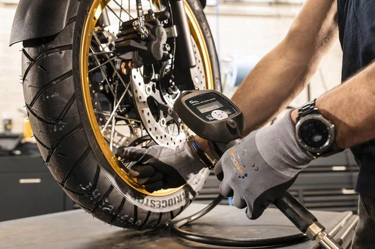
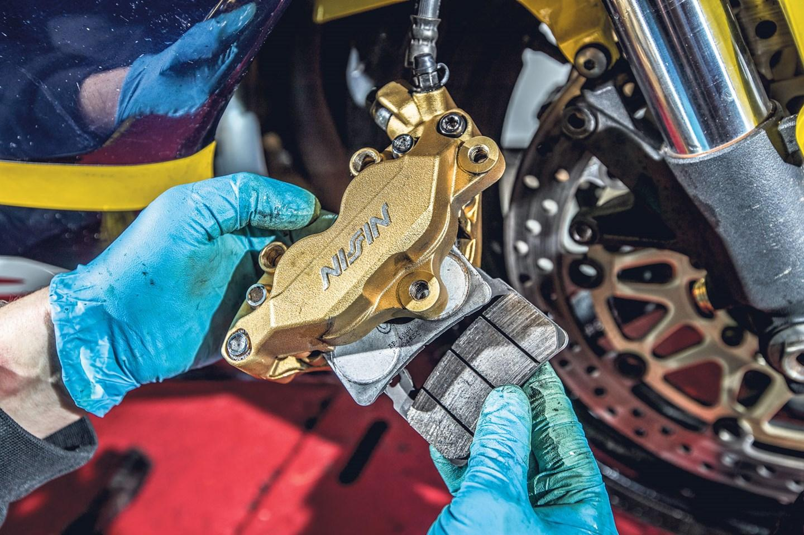
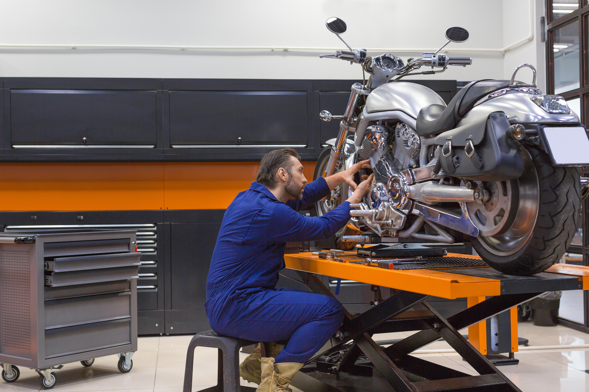

BIKE MAINTENANCE
RIDING TIPS
10 Essential Motorcycle Maintenance Tips Every Rider Should Know
Regular motorcycle maintenance is essential for
keeping your bike in excellent condition. A few
simple checks can improve performance, prevent
unexpected breakdowns and increase safety.
Whether you ride your motorcycle every day or
occasionally enjoy long-distance trips, maintaining
your bike should always be a priority. Proper care
helps extend the life of important components and
ensures a reliable riding experience.
01 / ENGINE CARE
Engine Oil Maintenance
Engine oil plays an important role in reducing
friction, controlling engine temperature and
protecting internal components. Always check
the oil level and follow the manufacturer's
recommended replacement schedule.
Check Oil Level
Inspect engine oil regularly before long rides.
Change Oil on Time
Replace engine oil according to the recommended interval.
02 / TYRE CARE
Check Your Motorcycle Tyre Pressure
Proper tyre pressure improves road grip,
handling and fuel efficiency. Incorrect pressure
can affect stability and cause uneven tyre wear.

Important Tyre Inspection Tips
- Check tyre pressure regularly.
- Inspect tread depth and tyre condition.
- Look for cuts, cracks and unusual damage.
- Maintain the manufacturer's recommended pressure.
03 / BRAKE & CLUTCH CARE
Inspect Brakes Regularly
Your motorcycle braking system is one of the
most important safety components. Regularly
inspect brake pads, discs and brake fluid.
If you notice unusual sounds or reduced braking
performance, arrange a professional inspection.

04 / GENERAL MAINTENANCE
Clean and Lubricate the Chain
A clean and properly lubricated motorcycle chain
helps transfer engine power smoothly to the rear
wheel. Check chain slack and lubrication according
to your motorcycle owner's manual.
- Clean dirt and dust from the chain.
- Apply suitable chain lubricant.
- Check chain tension regularly.
- Inspect sprockets for excessive wear.
05 / ELECTRICAL CARE
Check Your Motorcycle Battery
A healthy battery ensures reliable starting
and proper functioning of electrical components.
Check battery terminals, wiring connections
and charging performance periodically.
 06 / BIKE CARE
06 / BIKE CARE
Keep Your Motorcycle Clean
Regular cleaning removes dust, mud and road
contaminants that may affect your motorcycle.
Clean the exterior carefully and dry important
metal components to reduce corrosion.
Expert Tip:
Follow your motorcycle manufacturer's service
schedule. Regular inspections can help identify
small issues before they become expensive repairs.
07 / PROFESSIONAL SOLUTIONS
When Should You Visit a Professional Mechanic?
Some motorcycle problems require professional
diagnosis and repair. Do not ignore unusual
engine noises, brake problems, electrical
failures or persistent performance issues.

FINAL THOUGHTS
Keep Your Motorcycle Ready for Every Ride
Consistent motorcycle maintenance helps improve
performance, extend the life of your bike and
provide a safer riding experience. Make regular
inspections part of your routine and trust
experienced mechanics when professional repairs
are required.
Explore Our Services
Tags:
Maintenance
Bike Care
Riding Safety
ARTICLE BY
MotoCare Expert Team
Sharing practical motorcycle maintenance
knowledge, repair guidance and riding tips
to help every rider.